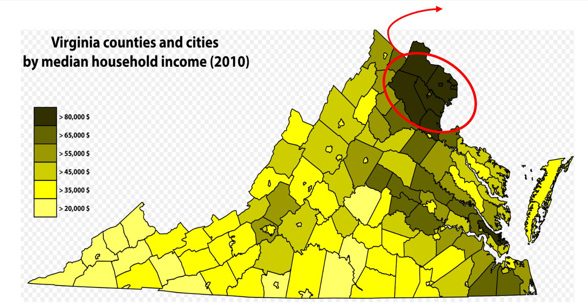
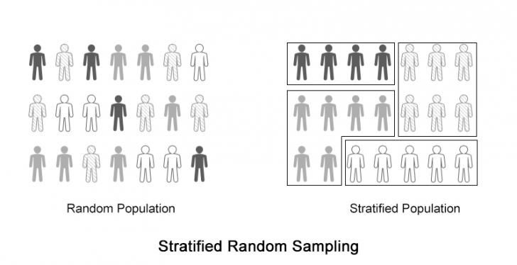
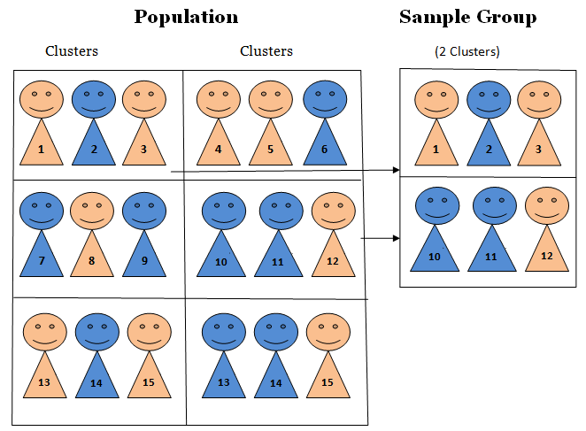
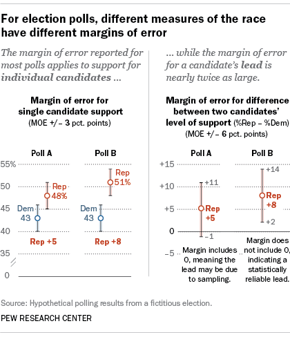

6 Surveys
By Irene Kwon
6.1 Introduction & Background
Topically, political science deals with regimes, policies, elections, parties, and most importantly, the people. The majority of countries now have democratic political systems; people choose their own leaders, and politicians choose their policy platforms to serve the needs of the people. In doing so, surveys provide a useful means to navigate through individuals' opinions and preferences regarding various issues. However, surveys are more than just asking people about their opinions. A good survey is surprisingly hard to design and implement. In this chapter, we will examine each stage of a survey research, how to design and implement a good survey, and how surveys have been used in political science studies. We will also take a look at the advantages and disadvantages of the survey method.
6.2 Brief History of Survey Research
Survey research is a quantitative and qualitative method with two important characteristics: (1) the variables of interest rely on respondents' self-reported measures rather than surveyors' observations, and (2) sampling plays an important role in survey research (Price et al. 2015). Surveys can be used to describe single variables (e.g., the percentage of Americans who support abortion), or to explore statistical relationships between variables (e.g., the relationship between income and partisanship).
Although the concept of survey has long been around, most developments in surveys began in the early to mid-20th century. Groves identify the three eras of survey research: the Era of Invention (1930-60), the Era of Expansion (1960-90), and 1990 to the Present (Groves 2011). The basics of survey research were established in the First Era: survey designs, data collection methods and designs, and institutions conducting surveys in various sectors. For example, the now-widely used Likert-scale responses were invented in this era. However, due to the limited technology back then, the primary means of data collection was limited to face-to-face interviews and mailed questionnaires.
The Second Era witnessed a vast growth in the use of the survey method. Academically, quantitative social sciences began to grow; the U.S. federal government increased the funding for social sciences; and technological development allowed a cheaper and easier data collection via CATI (computer assisted telephone interviewing). Telephone played an essential role in data collection -- automated telephone calls replaced human-administered surveys, while telephone directories were also used as sampling frame (which were often limited to certain populations).
In the next era, from the 1990s onward, technology has presented both opportunities and challenges to survey research. On the one hand, mobile phones began to replace the use of traditional telephones, landline telephone registries declined in coverage, and caller identification services further declined the response rates. On the other hand, the rise of new communication media, notably the Internet, provided new means of data collection. With most people now having access to the Internet, online surveys have increasingly substituted telephone or mail surveys. Also, volunteer Internet panels arose as an alternative to the telephone registries. In sum, throughout each era, survey research methods have adapted to changes in the society and have exploited new technologies.
6.3 Designing a Survey Research
Whether it is to explore American public opinion about same-sex marriage or to explore Swedish public's thoughts about immigration policies, surveys provide a good means to infer what our population of interest have in mind. A survey research consists broadly of four stages: (1) developing the survey, (2) sampling, (3) fielding the survey and (4) analyzing the results.
Developing the Survey
The first step of a survey research is to outline the big picture of the survey. Before writing the survey questions, we have to think about the following questions first: what is the purpose of the survey? What are we trying to uncover through this survey? Whose opinions are we interested in? How could we best ask them?
Often, surveys ask about specific issues or topics. Therefore, the first step to be taken in designing a survey is to specify what it is we are making inferences about. This process of defining our variables of interest is called conceptualization. For example, assume that we are interested in exploring the relationship between globalization and democracy. Although we use both terms frequently in political science courses and in our everyday lives, they are open to different interpretations. To prevent confusion and even reaching different conclusions, we have to first clearly establish what we mean by globalization and democracy. By globalization, are we interested in economic or cultural integration? What do we mean by democracy -- would the presence of popular voting suffice? Or should we consider more substantive elements of globalization, such as competition between candidates, check-and-balance principle, or free speech and press? Depending on our own research questions, theories, and hypotheses, we can either narrowly or broadly define the key concepts and variables.
To empirically examine the relationship between variables, it is also important to define our variables in a manner that can be measured. This process of operationalization turns an abstract or qualitative concept into something empirically measurable. That is, operationalization is what enables measurement. For example, suppose that we define democracy as the presence or regular and effective elections. We might then want to operationalize democracy as a binary variable, so that 0 refers to non-democracy whereas 1 indicates democracy. Alternatively, we could operationalize democracy as a continuous variable such that the larger the variable value is, the more robust democracy it has; the lower the value is, the closer it gets to authoritarian regimes.
After we clarify our research topics, key concepts and how to operationalize/measure them, we then write survey questions. Keep in mind that poorly worded questions can affect responses, and therefore, it is important to write clear, understandable, and answerable questions. Following are some criteria for good survey questions:
Understandable: all respondents should be able to understand the question in the same way. Otherwise, it is impossible to aggregate, analyze, and compare the responses. Avoid ambiguous expressions; if you have to use 'jargon' in the question, provide definitions and explanations for the term so that everyone can be on the same page. Also, ask only one question at a time -- avoid double-barreled questions. For example, rather than asking "do you like cats and dogs?", ask "do you like cats?" and "do you like dogs?" separately.
Clear: questions should also be clear. Write the questions in simple and plain words. Make the questions specific enough so that only one kind of answer is possible. For example, it is better to ask how the president is handling the job in each specific issue area rather than simply asking whether the president is handling his/her job well. Instead of asking "do you approve or disapprove of the way President Trump is handling his job as a president?", specify the questions: "do you approve or disapprove of the way the President is handling domestic economy?" or "do you approve or disapprove of the way the President is handling foreign policy issues?" These specific and hence clearer questions enable you to better get at the concepts you are trying to measure through the survey.
Answerable: keep the questions answerable -- for one thing, avoid asking hypothetical questions. The goal of a survey is to measure attitudes or opinions of the respondents; however, hypothetical questions generate hypothetical answers, which do not provide clear, consistent data that represent real opinion.
Besides the three criteria mentioned above, it is also important to avoid leading questions, and be cautious of asking sensitive questions. Leading questions might force people into answering people in a particular direction. Faced with leading questions, respondents are more likely to give biased answers or even drop out of the survey, and we cannot capture accurate opinions of the respondents. An example of a leading question would be: "how stupid do you think President Trump's immigration policy initiatives are?" Note that this question already has a negative word (stupid) in it, pushing people to think of President Trump's immigration policy negatively. Instead, use neutral wording: "how much do you approve of President Trump's immigration policy initiatives?"
Moreover, sensitive questions might also discourage people to give honest answers. People might be pressured to give an answer that comports with socially desired norms rather than their honest opinions (i.e., social desirability bias). To minimize social desirability bias, ask sensitive questions in the end so that respondents feel more comfortable in answering the questions, and emphasize the anonymity and confidentiality of the survey.
Sampling
After we conceptualize and operationalize our key variables of interest, we choose whom to ask the questions. Although in some cases we do survey the whole population (e.g., the Census), it is logistically implausible to conduct the population survey every time. Instead, we rely on a sample to infer about the population.

Figure 6.1: Population and Sample
A population refers to our entire target group that we are trying to understand. For example, if we are trying to understand how adult Americans feel about same sex marriage, our population would be U.S. adults. On the other hand, if we are interested in American college students' opinions about same sex marriage, then our population would only include college students in the United States. In drawing the sample, then, researchers must first be clear about the population that they wish to make inferences about. In order to get at the population, we often infer from a subset of the entire population: a sample. A sample consists of one or more observations drawn from the population. Therefore, to draw a meaningful inference about the population, it is important to have a reliable sample representative of the population. Ideally, the sample is a miniature version of the population.
Figure 6.2: How Sampling Can Go Wrong
Figure 2 presents the map of Virginia counties by median household income. The upper, darkest counties include some of the richest counties in the United States, notably Loudoun, Arlington, and Fairfax.14 Interested in American public opinion towards tax policies, let's say that a professor at George Mason University, located near Fairfax, obtains a convenience sample of nearby residents (n=50) to conduct a survey about income property tax. Could you say that the results from this survey reasonably represent an average American's preferences and opinions about tax policies?
Probably not! As you can see from Figure 2, even within the same state, counties vary tremendously in their income levels. It is highly likely that those living in the western-southern part of Virginia are more likely support higher tax on the rich and more generous welfare benefits. Also, the survey responses of only fifty people do not provide enough data to render correct inference about average Americans' attitudes about tax policies. In sum, this sample of fifty people from the rich Virginia counties is not a miniature version of the U.S. population. Using such skewed samples prohibits us from reaching a correct conclusion.
Then how do researchers select samples? Recall from Chapter 4 that there are two major sampling methods: probability sampling and non-probability sampling. SRS, stratified sampling, and cluster sampling are all the examples of probability sampling.
Simple Random Sampling (SRS)
Simple random sampling (SRS) is a sampling method to ensure that (1) every member of the population has an equal probability of being chosen, and that (2) every combination of N member has an equal chance of being chosen. SRS is an intuitive and simple technique to extract a sample from the population of interest. Lottery or random number generator-based sampling is an example of SRS. If we draw a sufficiently large sample, then we can reasonably assume that the sample will be somewhat representative of the population (i.e., law of large numbers). With a large enough sample, random sampling guarantees that our sample will be like the population on all variables. As a rule of thumb, a sample size of 1,000 is large enough to make meaningful inferences about American population.
Then why do we not just always use simple random sampling all the time? Why do we have all these different ways of probability sampling? First, we often face budget constraints. Or, even though we have enough budgets, our research questions sometimes dictate that it is better to use other sampling methods than simple random sampling. For example, there are cases when if we just take the simple random sample, it is hard to ensure a large-enough observations for certain groups of people. Then researchers oversample certain subgroups to ensure sufficient observations to draw meaningful inferences. In exploring the role of race and ethnicity in political participation in the United States, Leighley and Vedlitz used oversamples of African Americans, Mexican Americans and Asian Americans in Texas (Leighley and Vedlitz 1999). Similarly, in examining how racial group categorizations influence individuals' policy attitudes in the United States, Masuoka and Junn also used an oversample of Afro-Caribbeans (Masuoka and Junn 2013).
Stratified Sampling
Stratified sampling differs from SRS in that it first divides the entire population into smaller homogeneous sub-groups of strata. That is, each stratum is composed of similar observations -- e.g., based on income, educational level, race or gender. Then, we take the random samples from each stratum and pool them together. If we have distinct subgroups based on shared characteristics, we might use stratified sampling to highlight these inter-group differences.
Figure 6.3: Strati ed Random Sampling. Note: The population is grouped into strata based on shared characteristics.
Because stratification takes into characteristics of the original population, stratified sampling can better capture the key population characteristics in the sample. Through stratified sampling, researchers can ensure that certain subgroups are include in the sample. Moreover, stratification gives a smaller error in estimation and greater precision than SRS especially when the inter-group differences are large. For example, in surveying Americans' racial perceptions and policy attitudes, Masuoka and Junn used stratified sampling to recruit minority respondents (Masuoka and Junn 2013), as SRS possibly would not have guaranteed sufficient number of Asian or Latino participants. Likewise, YouGov also uses stratified sampling to ensure that the survey sample resembles the composition of the American population; age, race, gender and education are typically used as stratification variables. Cassesse et al. used YouGov's Cooperative Congressional Election Study, which used stratified sampling of 50,000 Americans, to examine how white Americans' racial attitudes affect anti-gender discrimination policy supports (Cassese, Barnes, and Branton 2015).
Despite its strengths, stratified sampling cannot be used when stratification is simply impossible -- e.g., when there is very little information available about the population or when there are only few distinct characteristics (not enough features) in the population so that we could not divide it into various subgroups.
Cluster Random Sampling
Figure 6.4: Cluster Sampling. Note: Here, the population is divided into several clusters; note that the entire cluster is sampled.
As in stratified random sampling, the population is divided into sub-groups, this time called clusters. Unlike strata, however, clusters are not made up of homogeneous observations. After clustering the population into various subgroups, we now take the random sampling of the groups (i.e., clusters). In cluster sampling, each cluster is treated as the sampling unit; in other words, sampling is done on clusters. Therefore, all the observations in the cluster are selected in the sample.
The biggest advantage of cluster sampling is that it is relatively cheap and easier to implement. Intuitively, it is cheaper and easier to observe the units in a cluster (e.g., based on geography -- like a town or a city) than observe the sample dispersed across the state. Also, unlike stratified sampling where researchers are required to have enough information about the population, cluster sampling can be used even when we cannot obtain sufficient information about the population as a whole. For example, it would be tremendously costly or even impossible to construct a complete list of the entire college undergraduates in the United States. However, it would be possible to randomly select a subset of the population based on geographical unit -- e.g., by states, by cities, etc. -- and then conduct surveys on them. Moreover, as we survey more clusters, we can accumulate the results to get at the knowledge about the target population; that is, cluster sampling permits accumulation of samples.
Nevertheless, compared with SRS or stratified sampling, cluster sampling has the largest possibility of generating biased/skewed samples. Depending on how you cluster the population, cluster sampling can result in a sample that does not adequately represent the population. For example, suppose that you are interested in Illinois residents' opinion towards free trade. Because of the constraints in time and budget, you did cluster sampling; the clusters you surveyed were from Evanston and Winnetka (a wealthy town located at the northern part of Evanston). Can we be confident that our results well represent the opinion of the entire Illinois residents? Probably no! Chances are, those clusters might have included one of the wealthiest and/or best-educated people in Illinois.
Alternatively, we might choose to use non-probability samples. Convenience samples are a notable example. Rather than being a representative subset of the population, a convenience sample simply consists of the cases that are easily available. Our political science department's research pool, made up of NU undergrads taking political science courses, is an example of a sample of convenience.
Compared with probability samples, convenience samples provide a relatively cheaper and easier access to survey implementation. For this reason, before they field the experiment on a representative sample, researchers often "pilot" their survey on convenience samples to figure out whether there are errors, or logistical and administrative problems in the survey design and implementation.
Nevertheless, researchers should keep in mind that convenience samples tend to be skewed -- e.g., student samples are more liberal, largely Democrats and more politically aware compared to the entire American adults. Likewise, since these samples are most likely not representative of our population of interest, we cannot say that survey results from convenience samples provide accurate insights about the population of interest.15
Check-in question: what is probability sampling? Is probability sampling better than non-probability sampling? What are the pros and cons of each probability sampling method?*
- Fielding the Survey
Now off to implementing the survey! Traditionally, surveys have been conducted via mail, over (landline) phone, or in person. Although these platforms are still being used, with the widespread of the Internet, we are now able to implement surveys more cheaply and effectively via online.
Each survey method has its own pros and cons. The methods where a surveyor is involved in implementation are usually more expensive but have higher response and completion rates, whereas self-administered surveys are cheaper but may have lower response and completion rates. Researchers should decide how to implement their surveys given their research questions, population and sample, and each method's tradeoffs. Is our biggest expected problem respondent fatigue or low response rates? Who are our target population: e.g., Chicago residents or all Americans nation-wide? How big is our budget? If the response rate is a bigger problem than budget constraint, then we might consider employing trained surveyors; if our surveys contain questions touching upon sensitive information, then we might want to employ a method to better ensure anonymity.
Face-to-Face Survey
Pros: because this implementation method involves personal interactions, it yields higher response and completion rates. Also, researchers can monitor/observe participants and ensure that respondents followed the instructions. It is also easier to make sure that respondents understood the questions. Moreover, this method is particularly suitable if we want to include a specific set of sample -- e.g., the elderly, the disabled, or the illiterate who cannot access to online surveys.
Cons: because it involves the interaction between the respondents and the interviewer, the principle of anonymity is compromised. Therefore, it is more prone to social desirability bias. Also, compared with self-administered surveys, this method is more expensive and logistically harder to administer. If the sample is geographically dispersed, researchers need extra coordination to implement a face-to-face survey.
Telephone Survey
Pros: along with face-to-face surveys, telephone surveys also have higher response rates and completion rates than self-administered mail surveys. Compared with face-to-face surveys, telephone surveys provide better anonymity because respondents do not have to directly meet the implementer.
Cons: as the survey is implemented via phone, it is not suitable for lengthy surveys. Also, respondents included in the sample might simply choose not to pick up the call -- leading to lower contact rates.
Online Survey
Pros: even via online, researchers can employ various sampling methods -- e.g., SRS or stratified sampling. Through online, we can also reach out to a huge sample quickly and cheaply; moreover, we are able to reach out to the sample widely dispersed. It guarantees better anonymity because respondents do not have to personally face the interviewer (and often, they are given de-personalized identification numbers). Researchers can get creative with the survey -- online surveys allow researchers to include audiovisual components more effectively.
Cons: because it is a self-administered survey, researchers are not able to monitor the compliance and the completion of the question. Fatigued respondents might just give "straight-line" answers. The quality of responses might not be as great as that from a face-to-face survey or a telephone survey. Also, online survey requires access to a website and computer literacy, yielding the net sample of "computer-literate people." Often, old, disabled people may not be able to conduct the survey.
Mail Survey
Pros: as with an online survey, a mail survey also guarantees better anonymity than face-to-face surveys. It is relatively easy to administer; researchers send out mails with questionnaires, and after completing them respondents send those back. Also, respondents can take the survey at their own pace; computer-illiterate participants can take the survey as well.
Cons: mail surveys take longer than other methods, and it has low response rates as well. There are limitations to employing audio-visual materials unlike as in online platforms.
Check-in question: suppose that we are interested in how the elderly (65 years and older) think about universal healthcare. We are interested in how political liberal-conservative ideology of the elderly is correlated with their support for universal healthcare. How would you field the survey, and why?
- Analyzing the Results
In analyzing the survey results, we must keep in mind that we are trying to estimate parameters about the population with sample statistics.16 Because of the potential errors stemming from the sampling process, we cannot be sure the sample statics are exactly identical to population parameters. Hence, it is necessary to build uncertainty in our inference about parameters.
Margin of error quantifies the random sampling error. We cannot be one hundred percent confident that our sample statistic is the exact value of the population parameter; because we are using samples, any survey or poll will differ from the true population by a certain amount. Therefore, by constructing a confidence interval around a point estimate (i.e., sample statistic), we are acknowledging that there is room for error for our estimates. Margin of error is the range of values below and above the sample statistic in a confidence interval.
Confidence interval = sample statistic \(\pm\) margin of error

Figure 6.5: Margin of Error and Con dence Interval
As we have seen in the hypothesis testing chapter, confidence intervals mean that we are confident that the true parameter lies within that range. Conventionally, political scientists use 95 percent confidence level; this means that 95 percent of the time, the value obtained from a random sample will fall within this interval. Note from the Figure 5 that the margin of error gets smaller with a bigger sample.
Figure 6.6: Con dence Interval in a Poll
Check-in question: Can we say that the Republican candidate is leading based on the two polls presented in Figure 6? If so, why? If not, then why not?
We have seen that margin of error takes random sampling error into account; however, margin of error and confidence interval do not account for systematic measurement error or systematic sampling error (Barakso, Sabet, and Schaffner 2013). Even if we took a random sample of the population, some subgroups might be overrepresented in the sample -- e.g., Mechanical Turkers tend to be younger, more college-educated and liberal than average Americans. Or, because of the way the survey was implemented, there might be non-response errors -- e.g., if we conduct an online survey, the elderly might be undersampled. In such cases, treating all the responses from an unrepresentative sample equally might lead to a failure to have a correct inference about the population.
Weighting is a technique to correct for the sample's lack of representativity. Data can be weighted by various variables such as age, gender, race/ethnicity, or income, so that the sample could resemble the population, and ultimately, get at a more accurate population parameter.
6.4 Applications
We can see surveys everywhere. Companies conduct surveys for market research and customer satisfaction; newspapers and think tanks run surveys to see what the public thinks about different issues and policies.
Surveys can be large -- as in ANES (American National Election Studies), GSS (General Social Survey), WVS (World Value Survey) and Eurobarometer. These surveys ask questions ranging from respondents' values, life goals, to political and social issue salience, and to basic demographics. With the extensive lists of questions, these survey data can provide us with quasi-qualitative data about respondents. Similarly, WVS asks what respondents value as important qualities of a child, desirable traits of neighbors, essential features of democracy, and how much confidence they have in various institutions (e.g., Labor Unions or the Police), religiosity, etc17. We can often see political science and sociology works employing these surveys; Kane and Whipkey, for example, use the General Social Survey to reveal the motivations behind the support for gender-related affirmative actions (Kane and Whipkey 2009).
Surveys can also be small, often as in polls. Note that by a "small" survey, social scientists are not referring to a survey with a small sample size but one with few questions. Gallup's presidential approval rating polls,18 for example, has only one question! Such short surveys, often with just one or two key question(s), are called polls rather than surveys. Pew Research Center conducts polls for various topics, which are widely used in academic works and also quoted in the media.
6.5 Advantages of Method
A lot of political science theories are based on micro-level foundations. Political scientists are interested in uncovering how individuals think and feel about certain policies and social phenomena, and why they think so. Surveys are valuable for empirically examining these theories, since they allow the direct measure of public opinion and individual-level variables. For example, as Open Economy Politics scholars predict, does relative economic standing of an individual affect his/her attitudes toward free trade? Or are there more than mere economic factors, such as gender or socialization via labor unions, that determine trade policy preferences? Surveys allow researchers to directly investigate these research questions.
The use of surveys is not limited to asking respondents about their policy preferences or political ideology. Instead, surveys also allow us to explore various topics. GSS and WVS (as explained above) are notable examples -- the range of questions asked is very wide; we can ask respondents' moral values, environmental concerns, policy preferences and their issue salience via surveys. Moreover, standardized surveys over a long period of time can provide a valuable resource for time trend analysis.
Especially with the advancement of online survey platforms, surveys are often relatively easy -- despite all the considerations to be taken before actually implementing the survey -- to field. Researchers are able to reach out to a large number of respondents with less geographic limitations. Furthermore, compared to other data collection methods (e.g., in-depth interviews, case studies, archival research), surveys take less time. Moreover, with proper statistical analytical tools, surveys provide an effective, flexible way of generating knowledge.
6.6 Disadvantages of Method: Surveys, Easier Said than Done
However, even a well-designed survey could go wrong -- sometimes for the reasons outside the researchers' control! In addition to errors pertaining to the sampling stage, there are other potential errors and disadvantages because surveys involve human responses.
Respondent fatigue: Because human beings have limited attention span, participants might become tired (and/or bored) of answering the survey questions, and as a result, the quality of their responses deteriorates. People might just click "don't know," give out random responses, or simply skip the questions and not answer at all. We can expect survey respondents to be fatigued especially when the survey questionnaire is lengthy.
Question wording and order effect: Depending on how the question is asked, respondents might give different answers. Even small differences in wording can alter the survey results (more in the Experiment chapter -- framing effect). Pew Research Center's surveys on American public opinion about the Iraq War provide a good example. When the question was worded "would you favor or oppose taking military action in Iraq to end Saddam Hussein's rule?", 68% of participants responded that the favored military action against Iraq while only 25% answered that they are against the military action. When the question was worded differently -- "would you favor or oppose taking military action in Iraq to end Saddam Hussein's rule even if it meant that U.S. forces might suffer thousands of casualties?" -- the results changed substantially. Now, 48% of the respondents said they opposed the military action while only 43% said they favored it! Question order can also impact survey results. Schuman and Presser present an interesting example. In a survey during the Cold War, Americans were asked whether journalists should be allowed to travel between the US and the USSR. When they were first questioned whether Soviet journalists should be allowed to visit the U.S. to write articles for Soviet newspapers (and then were asked about American journalists), respondents showed lower support for cross-country travel of both Soviet and American journalists. However, when they were first questioned regarding American journalists traveling to the Soviet Union, respondents were more likely to support the reciprocal travel of Russians and Americans (Schuman and Presser 1996).
Limitation in human capacity to recall: People might not accurately recall past events, and simply because they failed to properly recollect the past, it is also likely that respondents could not provide their actual attitudes or opinions.
Conflict of incentives: Nowadays, researchers can easily recruit survey participants via online platforms such as Amazon Mechanical Turk (MTurk). These respondents are paid per task completed; therefore, their interests lie in maximizing the number of surveys completed. Contrary to the researchers' incentives to ensure well-contemplated responses, these online survey platforms can encourage respondents to finish surveys as quickly as possible and move on to the next tasks, resulting in low-quality answers.
Social desirability bias: Respondents may also be pressured to answer questions in a manner that will be viewed 'favorably' by others. A famous example for social desirability bias is that when asked about the number of their sexual partners, women tend to attenuate their numbers while men tend to inflate theirs. Since health-related studies often rely on self-reported measures, it inevitably suffers social desirability bias19 Similarly, family planning is an area vulnerable to this bias; people tend to underreport the frequency of unprotected sex while overprotecting the contraceptive use (Stuart and Grimes 2009). They also found that people extensively underreport induced abortion. Hadaway et al. revealed that church attendance rates based on respondents' self-reported responses substantially overstates actual religious attendance in the U.S. (Hadaway, Marler, and Chaves 1993). To mitigate social desirability bias, anonymous self-administration (e.g., via the Internet) might help -- it can ensure that respondents do not feel directly and personally involved, and can decrease social desirability bias. Researchers can also emphasize that the responses will be kept confidential and anonymous and that the responses therefore will not be used against the respondents.20
By nature, a survey is a large-N, observational study; in-depth exploration of the motivations behind the answers could not simply be observed via survey. Interviews might be more appropriate in this case. Alternatively, we can add open-end questions in the survey to ask "why" questions which would require other analyses such as text and/or content analysis. Inter-coder reliability is especially important for content analysis of open-end responses. Inter-coder reliability is the widely used term for the extent to which independent coders evaluate a characteristic of a message or artifact and reach the same conclusion (Lombard, Snyder-Duch, and Bracken 2002). For example, surveys such as ANES often ask respondents why they support certain candidates over others. Respondents provide various reasons for supporting specific candidates, and it is necessary to sort out what the most salient reasons are for the respondents. Inter-coder reliability in this context refers to the extent to which different coders classify the content of the answers into the same category. It is a critical component of content analysis -- when it is not established, the data and interpretation of the data cannot be considered valid (Lombard, Snyder-Duch, and Bracken 2002).
Non-response bias: When respondents differ from non-respondents in meaningful ways. Unlike coverage bias, non-response bias occurs when some respondents included in the sample do not respond. This might be because the respondents refuse to participate, or the researchers failed to reach some participants. For example, if you are running a survey about immigration and assimilation, and if your survey includes a question about respondents' legal status, it is highly likely that those who are undocumented would feel more uncomfortable filling out the survey and therefore, more likely to opt out. Although the research question was about how both undocumented and documented immigrants and their assimilation patterns, this survey will result in a net sample of legal/documented immigrants (which is different from the original sample). As expected, surveys asking for legally sensitive information are more sensitive to non-response bias; also, if the survey explicitly states that the government or organizations of authority are collecting the data, we might face more serious non-response bias.
Coverage error: This error occurs when there is not a one-to-one correspondence between the target population and the sampling frame from which a sample is drawn. A Sampling frame is the list of all the units within a population that could be sampled. It could include not only individuals, but also households, schools, companies or other institutions depending on our research question and unit of analysis. Ideally, the sampling frame perfectly coincides with the target population; but when it does not coincide, we have coverage error.
Figure 6.7: Coverage Error
Check-in question: what could be the solutions to social desirability bias or non-response for sensitive questions included in the survey? Be creative!
6.7 Broader significance/use in political science
Then when and how will we encounter surveys in political science? Almost all subfields -- ranging from American Politics to International Relations -- in political science have adopted survey research as their empirical strategy.
1. Use in IPE: What Determines Individual Support for Economic Openness?
International political economy (IPE) theorists, for example, use surveys to show the determinants of individuals' economic policy preferences. Using cross-country surveys for Asian and European countries, Mayda et al. find that if individuals perceive risk (or instability) to increase along with trade openness, (s)he favors more restrictive policies such as tariffs or quotas. Using the same survey data, they also find that ideational factors, such as nationalism, also matter in determining individuals' trade protectionism (Mayda, O’Rourke, and Sinnott 2007). In a similar vein, also using survey data, Mutz and Kim find that in-group favoritism influences Americans' attitudes toward international trade (Mutz and Kim 2017). Rather than maximizing their own pocketbook gains, Americans tend to choose policies that maximize the well-being of fellow Americans. They also find that when Americans think that the trading partner country loses so that the U.S. achieves a greater relative advantage, trade policy garners greater support.
2. Use in American Politics
American politics scholars also use survey to study public opinion. For example, to reveal factors driving Trump's electoral success in 2016, Ferguson et al. also use survey data (ANES); they find that (unsurprisingly) Trump's populist rhetoric resonated with Americans' economic concerns, racism and sexism. They reveal that the roots of Trump's victory in 2016 lie in Americans' economic and social concerns (Ferguson et al. 2018).
3. Use in Everyday Politics
In addition to their academic uses, surveys are also used for our everyday lives. Because their professional careers depend on reading public opinion accurately, politicians refer to various polls to grasp the public's attitudes toward current policies and future policy options (Erikson and Tedin 2015). The American public is becoming more engaged in politics, leading them to increasingly follow the polls more closely.21 As they write, "academic polls advance our knowledge of public opinion, and commercial pollsters satisfy the public's (and private clients') curiosity regarding trends in public opinion."
6.8 Conclusion
A lot of political science theories are either explicitly or implicitly based on micro-level foundations. Surveys provide a good means to directly probe how individuals think, allowing the empirical testing of political science theories. With the same survey questions repeatedly asked over a long time, surveys can provide insights about the trends in the public opinion. Surveys are also very versatile; they can be combined with other data collection methods and analysis techniques such as experiments and regressions. Surveys are important for politicians as well, since they rely on surveys/polls to base their electoral strategies and policy platforms. However, as social scientists, we should also remember that although the idea of survey research seems very intuitive, a good survey is surprisingly hard to design and implement as we have seen in this chapter. Errors can arise at every stages of survey design, and only with caution can we reap the full benefits from a survey research.
6.9 Application Questions
1. True or false?
- Surveys offer better external validity than experiments.
- Surveys offer better external validity than case studies.
- Surveys are particularly good at exploring subgroup differences and historical trends because they usually have large enough sample sizes.
2. Define and provide the an example of each of the following errors.
- Sampling error
- Non-response error
- Measurement error
6.10 Key Terms
- conceptualization
- convenience sample
- coverage bias
- double-barreled question
- inter-coder reliability
- margin of error
- non-response bias
- response rate
- sample
- sampling frame
- validity
- weighting
6.11 Answers to Application Questions
True or false question: True, True, False
References
Barakso, Maryann, Daniel M Sabet, and Brian Schaffner. 2013. Understanding Political Science Research Methods: The Challenge of Inference. Routledge.
Cassese, Erin C, Tiffany D Barnes, and Regina P Branton. 2015. “Racializing Gender: Public Opinion at the Intersection.” Politics & Gender 11 (1). Cambridge University Press: 1–26.
Erikson, Robert S, and Kent L Tedin. 2015. American Public Opinion: Its Origins, Content and Impact. Routledge.
Ferguson, Thomas, Benjamin Page, Jacob Rothschild, Arturo Chang, and Jie Chen. 2018. “The Economic and Social Roots of Populist Rebellion: Support for Donald Trump in 2016.” Institute for New Economic Thinking Working Paper Series, no. 83.
Groves, Robert M. 2011. “Three Eras of Survey Research.” Public Opinion Quarterly 75 (5). Oxford University Press: 861–71.
Hadaway, C Kirk, Penny Long Marler, and Mark Chaves. 1993. “What the Polls Don’t Show: A Closer Look at Us Church Attendance.” American Sociological Review. JSTOR, 741–52.
Kane, Emily W, and Kimberly J Whipkey. 2009. “Predictors of Public Support for Gender-Related Affirmative Action: Interests, Gender Attitudes, and Stratification Beliefs.” Public Opinion Quarterly 73 (2). Oxford University Press: 233–54.
Leighley, Jan E, and Arnold Vedlitz. 1999. “Race, Ethnicity, and Political Participation: Competing Models and Contrasting Explanations.” The Journal of Politics 61 (4). University of Texas Press: 1092–1114.
Lombard, Matthew, Jennifer Snyder-Duch, and Cheryl Campanella Bracken. 2002. “Content Analysis in Mass Communication: Assessment and Reporting of Intercoder Reliability.” Human Communication Research 28 (4). Wiley Online Library: 587–604.
Masuoka, Natalie, and Jane Junn. 2013. The Politics of Belonging: Race, Public Opinion, and Immigration. University of Chicago Press.
Mayda, Anna Maria, Kevin H O’Rourke, and Richard Sinnott. 2007. “Risk, Government and Globalization: International Survey Evidence.” National Bureau of Economic Research.
Mutz, Diana C, and Eunji Kim. 2017. “The Impact of in-Group Favoritism on Trade Preferences.” International Organization 71 (4). Cambridge University Press: 827–50.
Price, Paul C, Rajiv Jhangiani, I-Chant A Chiang, and others. 2015. Research Methods in Psychology. BCCampus.
Schuman, Howard, and Stanley Presser. 1996. Questions and Answers in Attitude Surveys: Experiments on Question Form, Wording, and Context. Sage.
https://www.worldatlas.com/articles/richest-counties-in-the-united-states.html↩
As you recall, a measurable characteristic of a sample is called a statistic. A measurable characteristic of a population is called a parameter.↩
Because the same questions are asked in different countries around the same time frame, it allows us to compare what people value and how people think in various countries. You can access to WVS here: http://www.worldvaluessurvey.org/wvs.jsp.↩
Van der Mortel (2008) finds that social desirability-motivated responses were present in approximately 43% out of 14,275 health studies (Van de Mortel and others 2008).↩
On the other hand, some studies find that social desirability bias does not significantly affect the conclusion. Heerwig and McCabe find no evidence the college-educated people's support for a black president were inflated due to social desirability bias (Heerwig and McCabe 2009)↩
In 1944, only 19 percent of Americans said they regularly or occasionally followed poll results; this figure rose to 41 percent by 1985, to 65 percent in 2001, and to 89 percent in 2008 (Erikson and Tedin 2015).↩